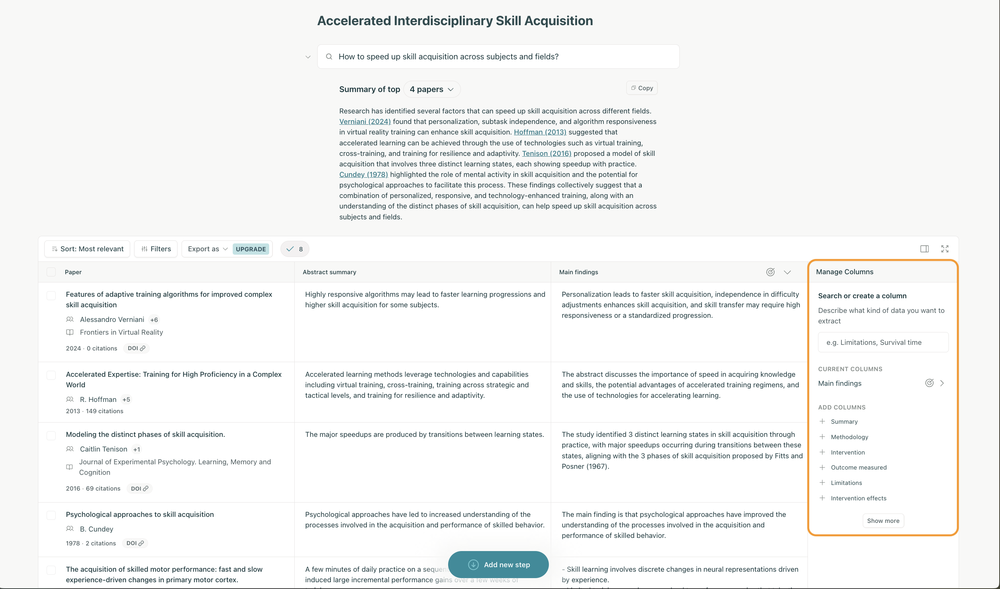

class: center, middle # Workshop: Augmenting Research Workflows with LLMs --- # Slack channel - [Slack channel for the workshop](https://join.slack.com/share/enQtNzY1NjMxODg1MjQzNC0xNzI2MzllN2VhNWU0YmNkNTQ3ZGMxZDgwODU3MWU4YWRiNWRkZGMxZmEwNjVjNDA1MjNkZGEyMGRkODIyY2Fl) <div style="display: flex; justify-content: center;"> <img src="../notebooks/assets-resources/slack-osdc-workshop-qr-code.png" width="400px"> </div> --- # Agenda 1. What are the LLM Tangibles? 2. Cool LLM-based UI Patterns 3. Level 0: Prompting Techniques for Better Research Workflows 4. Level 1: Pydantic & Data Structures for Research Primitives 5. Level 2: Agentic Workflows with LLMs for Research 6. Conclusing thoughts --- # What are the LLM Tangibles? <img src="../notebooks/assets-resources/augmentaiton-engelbart-title.png" style="width: 100%;"> --- # Augmentation = Enhancing Capability Through Tools <img src="../notebooks/assets-resources/engelbart-quote/engelbart-quote.001.jpeg" style="width: 130%; margin-left: -75pt; margin-top: -35px;"> --- # Augmentation = Enhancing Capability Through Tools <img src="../notebooks/assets-resources/engelbart-quote/engelbart-quote.002.jpeg" style="width: 130%; margin-left: -75pt; margin-top: -35px;"> --- # Augmentation = Enhancing Capability Through Tools <img src="../notebooks/assets-resources/engelbart-quote/engelbart-quote.003.jpeg" style="width: 130%; margin-left: -75pt; margin-top: -35px;"> --- <img src="../notebooks/assets-resources/douglas-engelbart-the-boss.png", style="width: 80%; margin-left: 50pt"> --- class: center, middle # LLM Tangibles? What are the LLM 'tangibles' we should learn? --- class: center, middle # First, some cool LLM-based UI Patterns --- # Elicit Tables UI <div style="display: flex; justify-content: center;">  </div> --- # Semantic Zoom Amelia Wattenberger = Freaking awesome <div style="display: flex; justify-content: center;"> </div> <p style="font-size: 14px;"> <a href='https://www.youtube.com/watch?v=PAy_GHUAICw'>Climbing the Ladder of Abstraction: Amelia Wattenberger</a> </p> --- # Semantic Zoom Amelia Wattenberger = Freaking awesome <div style="display: flex; justify-content: center;"> </div> <p style="font-size: 14px;"> <a href='https://www.youtube.com/watch?v=PAy_GHUAICw'>Climbing the Ladder of Abstraction: Amelia Wattenberger</a> </p> --- # Semantic Zoom Amelia Wattenberger = Freaking awesome <div style="display: flex; justify-content: center;"> <img src="./2024-09-05-12-21-00.png" width="600px"> </div> <p style="font-size: 14px;"> <a href='https://www.youtube.com/watch?v=PAy_GHUAICw'>Climbing the Ladder of Abstraction: Amelia Wattenberger</a> </p> --- # Latent Space Style Exploration of Ideas with Luminate <div style="display: flex; justify-content: center;"> </div> --- # Latent Space Style Exploration of Ideas with Luminate <div style="display: flex; justify-content: center;"> </div> --- class: center, middle # Built on top of atomic usage of AI --- class: center, middle # Level 0: Prompting Techniques for Better Research Workflows ??? - Granular AI - Atomic Usage of AI to research workflow scenarios - These examples are all about powerful functionality coming from UI inovation on top of simple atomic and granular AI capabilities (summarization, ensemble generation, etc...) - `This workshop is about finding the opportunities for granular application of AI to research problems/contexts and challenges` --- class: center, middle # Level 1: Research Primitives with Pydantic for Efficient LLM-based Research ??? Towards an Index of Scientific Cognitive Procedures? --- class: center, middle # Researcher controlled semantic data structures? ??? Could we implement researcher controlled semantic data structures to guide LLM-based cognitive procedures when doing research? --- class: center, middle # Level 2: Agentic Workflows with LLMs for Research --- class: center, middle # Practical Usage Patterns for Agentic Workflows --- # Patterns for Working with Agents 1. Iterative (mini) Research Reports (e.g GPT-Researcher) --- - [ ] What we want ultimately is useful and reliable transformations that help us get to where we need to go - [ ] How can we make incoherence evident without the disguise of hallucination? --- # References - https://arxiv.org/pdf/2310.10808v1 - https://www.youtube.com/watch?v=PAy_GHUAICw - [LLMs as Zero-Shot Hypothesis Proposers](https://www.semanticscholar.org/paper/Large-Language-Models-are-Zero-Shot-Hypothesis-Qi-Zhang/713b604fb9cdd6631074cbd6bf36db029031992e) - ---